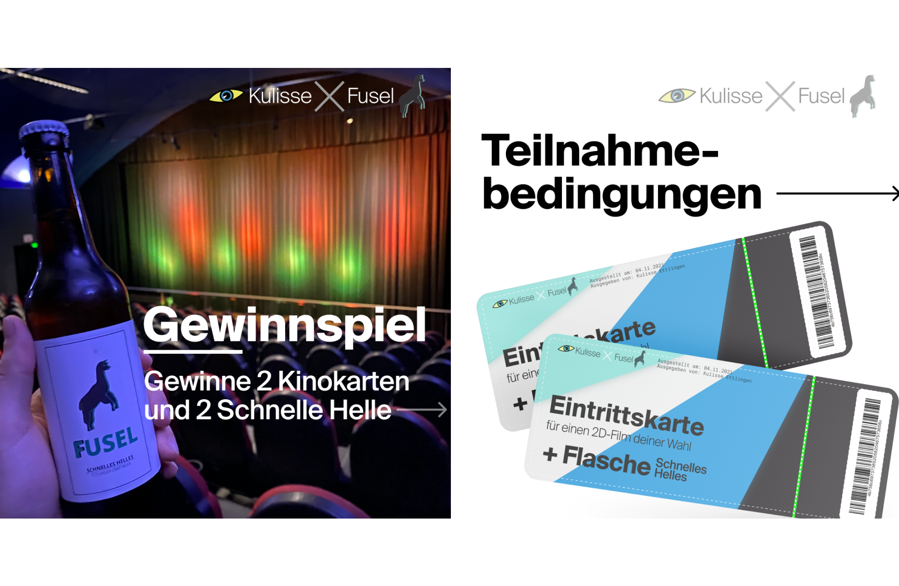

Lead Organisation & Digital Buchzig Festival
Zusammen mit der Stadt Ettlingen und den Stadtwerken wird für 2023 ein überregionales Musikfestival organsiert. Die eigene Leistung bezieht sich auf das Schaffen einer Corporate Identity und die Vermarktung des Festivals.